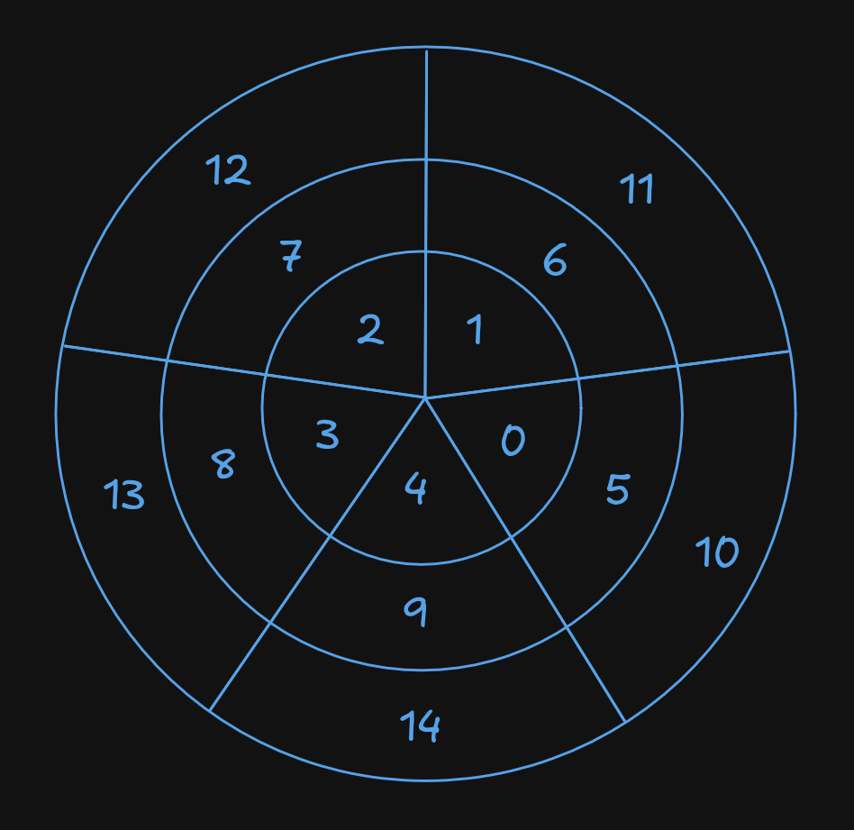

It is said that a and b are equal if, and only if a − b = 0.
Let a and b be integers. a is congruent to b modulo m, denoted as a ≡ b (mod m), provided that m | (a − b) (and a-b mod m = 0)
The symbols “≡” and “(mod m)” together represent one idea — so “a ≡ b” by itself is meaningless.
If a and b exist on a mod m wheel, then the difference between them will be a multiple of m if they’re congruent.
Take the modulo 5 wheel for example:
5 is congruent to 10, and 2 is congruent to 12 (because the difference between 12 and 2 for example is 10, which is congruent (equivalent) to 0 in modulo 5.
Let [r] denote the set of integers that have r as their “least residue modulo m” — that is, less than or equal to m − 1.
In the case of modulo 5 for example, all integers on the wheel have either 0, 1, 2, 3, or 4 as their "least residue" modulo 5.
This simply means that any integer modulo m can be "reduced" to 0, 1, 2, 3 or 4. It also means that these are all the possible remainders of any mod 5 operation.
The congruence classes modulo 5 are:
The set of all congruence classes modulo m is denoted as ℤm (read as “Z mod m”), that is:
ℤm = { [0], [1], …, [m − 1] }
Note that: